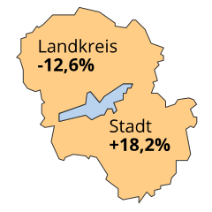
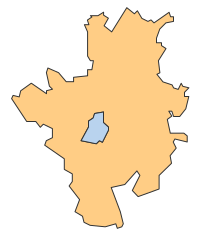

Studie zur Nahversorgung: Weite Wege auf dem Land
×
Zitieren
Sie können diese Informationen auch auf Ihrer Website verwenden. Bitte nennen Sie immer den Bayerischen Rundfunk als Quelle. Kopieren Sie einfach folgenden Code:
Und bei Ihnen?
Um die Situation in Ihrem Landkreis kennenzulernen, klicken Sie hier.
Der Markt Thierstein im Fichtelgebirge: Wer hier früher etwas einkaufen wollte, ging zu Manuela Steinadler. Sie hatte einen kleinen Laden mit den Dingen des täglichen Bedarfs. Heute sind die Rolläden geschlossen – vor fünf Jahren hat sie den Laden dicht gemacht. Seitdem steht das Geschäft leer. Mitten auf dem Marktplatz.
Es schmerzt, sagt Manuela Steinadler, aber der Laden hat sich einfach nicht mehr rentiert. Wer heute Butter kaufen will, oder Milch, muss mit dem Auto nach Marktredwitz oder Selb fahren. Zu Aldi, Lidl oder Edeka. In Thierstein selbst kann man nicht mehr einkaufen.
Manuela Steinadler musste ihren Laden in Thierstein vor fünf Jahren schließen. Heute gibt es keine Einkaufsmöglichkeit mehr im Ort.
Um ein Drittel ist die Zahl der Supermärkte im Landkreis Wunsiedel in den letzten zehn Jahren zurückgegangen – und in vielen anderen bayerischen Landkreisen sieht es nicht viel besser aus. Insgesamt gibt es heute 5883 Lebensmittelgeschäfte in Bayern, im Jahr 2005 waren es noch 6501, und das obwohl die Bevölkerung im gleichen Zeitraum gewachsen ist. Das belegen Zahlen, die der Landtagsabgeordnete Klaus Adelt (SPD) von der Staatsregierung erfragt hat und die BR Data exklusiv vorliegen.
Knapp zehn Prozent Rückgang in zehn Jahren – das klingt nicht dramatisch. Allerdings verteilen sich die Verluste nicht gleichmäßig auf den gesamten Freistaat. In ostbayerischen Landkreisen geht die Anzahl der Geschäfte deutlich zurück, in den Boom-Regionen wie München oder Ingolstadt nimmt sie zu. Am stärksten vom Ladensterben betroffen sind die Landkreise Neustadt an der Waldnaab, Hof und Bad Kissingen, die in den letzten zehn Jahren jeweils mehr als ein Drittel der Lebensmittelgeschäfte verloren haben, acht weitere Landkreise haben mehr als ein Viertel verloren.
Klicken Sie auf Ihren Landkreis in der Karte, um die Situation vor Ort kennenzulernen:
Sie können diese Informationen auch auf Ihrer Website verwenden. Bitte nennen Sie immer den Bayerischen Rundfunk als Quelle. Kopieren Sie einfach folgenden Code:
Die Daten zeigen: Besonders vom Ladensterben betroffen sind die ländlichen Regionen. Während in den kreisfreien Städten die Zahl der Läden insgesamt sogar leicht zugenommen hat, gibt es in den bayerischen Landkreisen im Vergleich zu 2005 heute 642 Geschäfte weniger.
Stadt versus Umland
Landshut
Stadt
+4
Land
-12
Rosenheim
Stadt
+3
Land
-17
Coburg
Stadt
0
Land
-18
Weiden in der Oberpfalz
Stadt
-1
Land
-26
Besonders deutlich zeigt sich die Entwicklung im Vergleich zwischen Städten und ihrem direkten Umland. Während die Zahl der Läden in den Städten meist zunimmt oder zumindest annähernd gleich bleibt, sind die umliegenden Landkreise fast durchweg vom Ladensterben betroffen.
In mehr als 500 bayerischen Gemeinden gibt es keine Einkaufsmöglichkeit für Lebensmittel, einige dieser Orte haben mehrere Tausend Einwohner. In 157 davon gibt es nicht einmal ein Geschäft des Lebensmittelhandwerks, also weder Bäckereien noch Metzgereien. Sie gelten als unversorgt. Die am stärksten betroffenen Landkreise sind:
| Landkreis | Gemeinden ohne Supermarkt | Unversorgte Gemeinden |
|---|---|---|
| Donau-Ries | 20 | 6 |
| Ansbach | 16 | 6 |
| Main-Spessart | 16 | 5 |
| Augsburg | 15 | 7 |
| Neustadt an der Aisch/Bad Windsheim | 15 | 2 |
| Neustadt an der Waldnaab | 15 | 7 |
| Unterallgäu | 15 | 5 |
Viele Bürger wollen sich nicht damit abfinden, für jeden Einkauf mit dem Auto fahren zu müssen, während die Ortskerne veröden. In immer mehr Gemeinden gehen die Bewohner das Problem deshalb aktiv an und gründen selbst sogenannte Dorfläden. Das sind kleine Geschäfte, die oft als Genossenschaft organisiert sind, um im Ort eine Einkaufsmöglichkeit zu schaffen. Mehr als 100 solche Läden gibt es bereits jetzt – und es werden immer mehr.
Zurück nach Thierstein: Auch hier gibt es Hoffnung. Mit viel ehrenamtlichem Engagement haben fünf Frauen aus dem Ort Geld eingesammelt, um den DoLa zu gründen, den Thiersteiner Dorfladen. Und die Idee kommt an. 55.000 Euro Startkapital haben sie als Mini-GmbH zusammenbekommen. Im Sommer sollen die ersten Kunden kommen.
Es gibt Hoffnung in Thierstein: Engagierte Bürgerinnen gründen einen Dorfladen. Im Juni soll er eröffnen.
Ein Dorfladen, das ist für die Gründerinnen klar, ist mehr als nur ein Geschäft, sondern auch ein sozialer Treffpunkt. Und wenn jeder Haushalt in Thierstein 15 Euro in der Woche ausgibt, dann kann das Konzept aufgehen.
Diese Analyse beruht auf Auswertungen zweier Antworten der Bayerischen Staatsregierung. Die Daten wurden im Auftrag des Bayerischen Wirtschaftsministeriums von der Firma Trade Dimensions erhoben. Der Begriff Lebensmittelgeschäft bezieht sich dabei auf Geschäfte mit den Artikeln des täglichen Bedarfs, wie Supermärkte oder Bioläden. Bäckereien oder Metzgereien werden als Geschäfte des Lebensmittelhandwerks bezeichnet.
Daten 2015: "Nahversorgung in Bayern - Stand 2015", gestellt von Klaus Adelt (SPD), nicht veröffentlicht
Daten 2014: "Nahversorgung in Bayern", gestellt von Klaus Adelt (SPD)